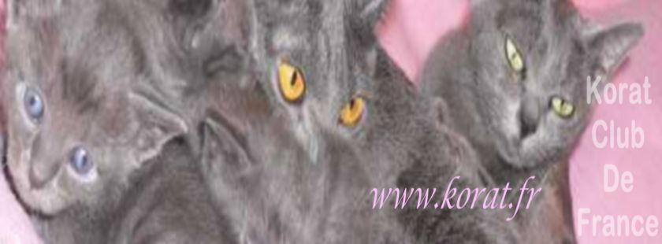
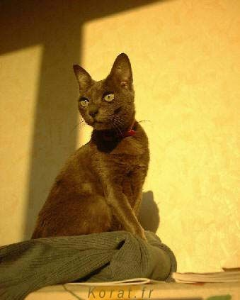

Le Korat est un chat de taille petite à moyenne ayant une large poitrine et un corps musclé. De douces courbes donnent au corps une apparence souple. Le front est large et plat, et la tête a une forme de coeur. Les grands yeux vert clair sont bien séparés. Les oreilles droites légèrement arrondies sont larges. La queue effilée est lourde à la base.
Tête
Vue de face, en forme de cœur. Front plat. Léger stop entre le front et le nez. Joues fermes et bien développées. Museau ni pointu ni carré. Nez long, légèrement bombé à son extrémité. Menton fort, développé. Mâchoires fortes.
Oreilles
Grandes, larges à la base, aux bouts légèrement arrondis. Placées haut sur le crâne, en alerte. Fourrure courte sur la face externe.
Yeux
Grands, ronds, bien écartés, légèrement inclinés. Couleur vert lumineux de préférence. La couleur ambre est acceptée notamment chez le jeune (après le bleu du premier mois). Par ailleurs, la couleur définitive (vert jade clair) n'est pas atteinte avant l'âge de 2 ou 3 ans. Arcades sourcilières dessinant deux larges courbes au-dessus des yeux.

Cou
De taille moyenne, long.
Corps
De taille moyenne semi-cobby, ni compact ni svelte. Dos légèrement arqué. Puissant, musclé, souple.
Pattes
Pattes arrière légèrement plus longues que les pattes avant. Ossature moyenne à forte. Pieds ovales.
Queue
De longueur moyenne, plus épaisse à la base, s'effilant jusqu'à l'extrémité arrondie.
Robe
Poil court, fin, lustré, serré. Fourrure simple (sans sous-poil) qui a tendance à se hérisser sur la colonne vertébrale lorsque le chat est en mouvement. Couleur dans les bleu-gris argent (silver blue). L'extrémité du poil est argentée, donnant un brillant givré. Le cuir du nez est bleu-gris foncé. Coussinets de bleu foncé à lavande rosé acceptés.
Défaut
Tête étroite. Yeux petits, peu espacés. Nez trop long ou trop court. Menton pincé (pinch). Disqualification : toutes couleurs comme des taches blanches.
Caractère
Chat vif, actif, très agile et très joueur, mais qui n'aime pas particulièrement l'agitation ou le bruit. Il a besoin d'un environnement serein. Il se montre réservé vis-à-vis des étrangers au début (timide ce félin dominant ?). Doux, très affectueux, hypersensible, il est très attaché à son maître (d'où son célèbre caractère dit de chien). Il réclame beaucoup d'amour et d'attention. Son miaulement est mélodieux. Son entretien est facile. C'est certainement le chat le plus intelligent des félins.
Remarque
Mariages autorisés avec les autres races : aucun.
Un museau bien développé avec un nez court et voilà un joli cœur ! Cette tête en forme de cœur est la " marque " du Korat et fournit comme un écrin à de magnifiques yeux verts. Le Korat possède aussi un corps élégant de taille moyenne, vigoureux et musclé qui se termine par une queue effilée. C'est un raffiné intégral !

Fiche descriptive du LOOF pour le Korat
Descriptions selon les Livres d'Origines
- Description selon le LOOF (Livre Officiel des Origines Félines) en français
- Description selon la WCF (World Cat Federation) en français
- Description selon la Fifé (Fédération Internationale Féline)
- Description se ACFA (American Cat Fanciers Association)
- Description selon le CFA (Cat Fancier Association)
- Description selon TICA (The International Cat Association)
À lire également pour tout savoir sur la race :